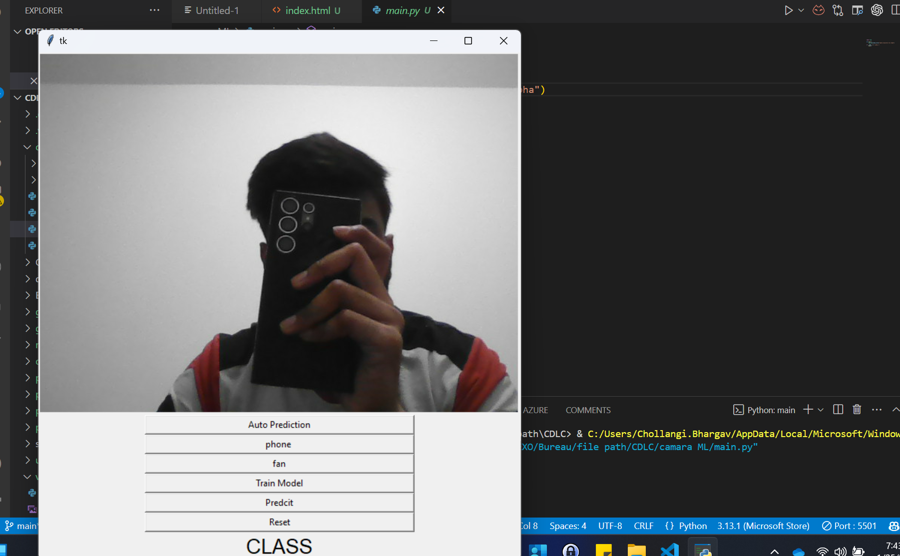
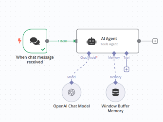

Azure DevOps WIKI RAG Chatbot
LangChain-powered RAG pipeline grounding GPT-4 on enterprise Azure DevOps WIKI pages. Deployed on Azure with streaming responses and semantic vector search.
Built & Shipped
A selection of AI systems, DevOps platforms, and cloud automation projects built at scale — from RAG chatbots to agentic pipelines.
LangChain-powered RAG pipeline grounding GPT-4 on enterprise Azure DevOps WIKI pages. Deployed on Azure with streaming responses and semantic vector search.

n8n + Azure DevOps AI agent automating sprint health reports, pipeline analytics, and team performance dashboards with natural-language delivery.

AI-powered pipeline that auto-generates Production Readiness Review checklists by analysing Azure DevOps API specs, reducing manual review time by 70%.

Agentic pipeline extracting invoice data with Document Intelligence, performing supplier web scraping, and structuring data for ML predictions and Streamlit dashboards.
End-to-end DevOps pipeline deploying a YouTube-like application on Azure App Service using multi-stage YAML pipelines, Docker, and Azure Container Registry.
Parameterised Bicep template library with dynamic CI/CD pipelines managing complete Azure Data Platform: Key Vault, Data Factory, Databricks, Storage, and Function Apps.
LangChain-powered Retrieval-Augmented Generation pipeline that grounds GPT-4 responses on entire Azure DevOps WIKI knowledge bases. Deployed as a containerised Streamlit application on Azure Container Apps.

n8n agentic platform orchestrating Azure DevOps data, OpenAI analysis, and automated delivery of sprint health reports, code quality insights, and team performance dashboards via Teams and email.
AI-powered Production Readiness Review system that analyses API specifications and automatically generates compliance checklists, reducing manual review effort by ~70%.
Agentic pipeline that extracts structured invoice data using Azure Document Intelligence, enriches it with supplier web-scraping agents, and feeds ML models for pricing predictions.
Complete DevOps showcase: YouTube-like web application deployed on Azure App Service with multi-stage Docker build pipelines, Azure Container Registry, and full CI/CD automation.
Fully parameterised Bicep template library covering all Azure Data Platform services, backed by YAML pipelines that dynamically fetch parameters from Resource Groups and deploy with zero manual steps.